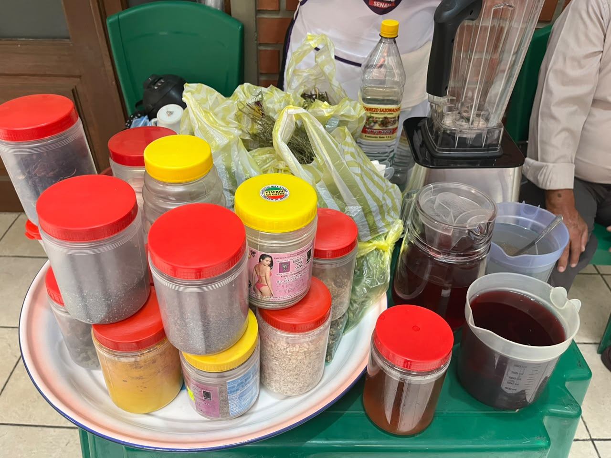
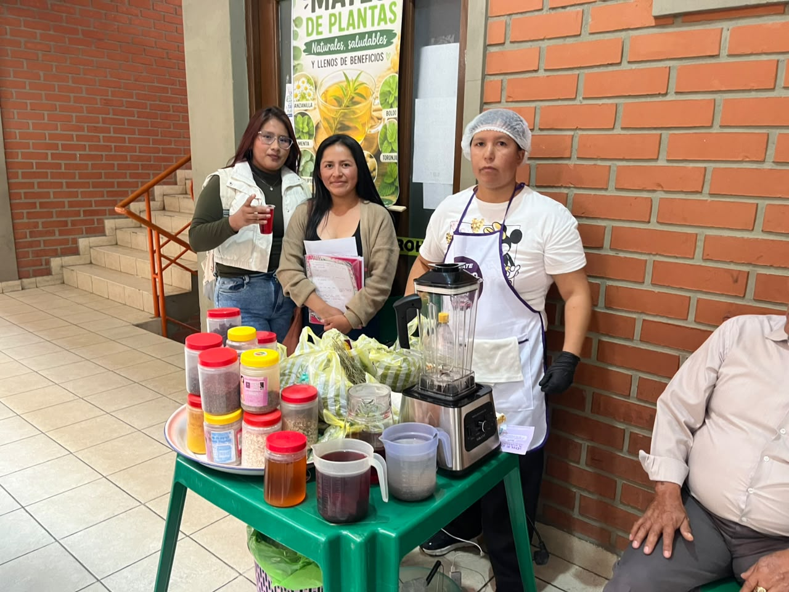

FEXPO ITSEC 2026 - ¡Bienvenidos!
FEXPO ITSEC SUCRE

En la FEXPO ITSEC Sucre se presentan diferentes emprendimientos que permiten conocer nuevas ideas de negocio. Entre ellos se encuentra Mates de Plantas, un emprendimiento que ofrece productos naturales y alimentos tradicionales para sus clientes.


Mates de Plantas es un emprendimiento dedicado a ofrecer productos naturales elaborados a partir de plantas, además de alimentos tradicionales que forman parte de las costumbres gastronómicas de nuestra región.
El emprendimiento busca brindar una atención cómoda y accesible. Para ello, recibe pedidos mediante WhatsApp, permitiendo que los clientes consulten sobre sus productos y realicen sus compras de manera sencilla.
Además, ofrece servicio de entrega a domicilio (delivery), facilitando la recepción de los pedidos sin necesidad de que los clientes se trasladen hasta el establecimiento.
La participación de Mates de Plantas en la FEXPO ITSEC permite promocionar sus productos, llegar a nuevos clientes y demostrar cómo un emprendimiento puede aprovechar las herramientas digitales para mejorar su atención y crecimiento.